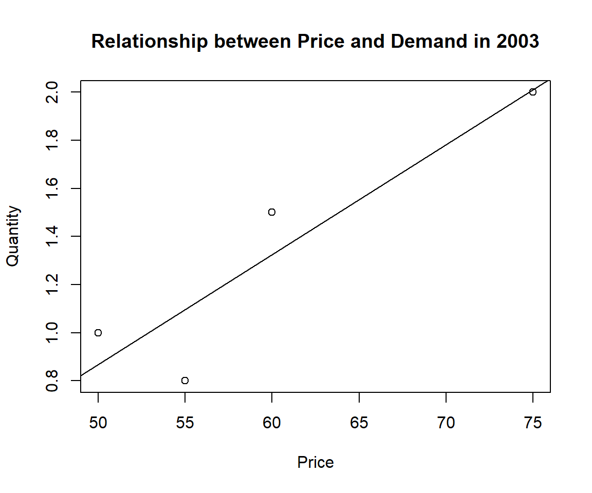
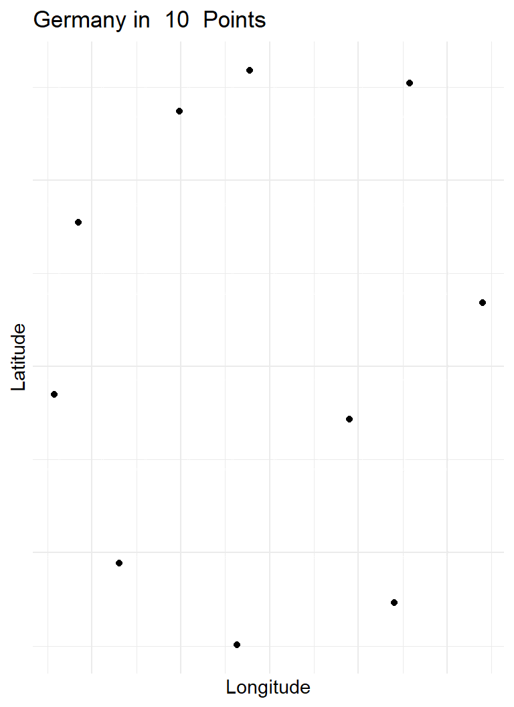

Chapter 3 Unstructured Data
Pages, words, and places
Most of the information in the world was never poured into a spreadsheet. It sits on web pages, in sentences, on maps — shapes that no statistical function will accept. The task in this chapter is conversion: turning something that is not a table into one, without losing the thing that made it worth having.
That conversion is never neutral. Deciding which part of a page is data, which words count as the same word, or which coordinates belong to which region are analytical choices made before the analysis begins, and they deserve the same scrutiny as any model.
3.1 Web Data
“Over the last two years alone, 90 percent of the data in the world was generated.”
Data scraping is a technique where a computer program extracts data from human-readable output coming from another program. Data scraping often takes place in web scraping (also known as crawling or spidering). In this process, an application is used to extract valuable information from a website. PDF scraping or more general report mining is the extraction of data from human-readable computer reports. It is worth considering alternatives before start scraping data.25
3.1.1 Most expensive paintings
What do The Card Players and Marshall Islands have in common?

Figure 3.1: The Card Players.

Figure 3.2: Flag of Marshall Islands.
Well, the first was sold for about 250.000.000 million USD in an auction in 2011 and the laters nominal gross domestic product is of similar size 220.000.000 million USD in 2019. About 60.000 people live in Marshall Islands. The most expensive paintings score similar to the gross domestic product of insular states.
This is the English Wikipedia article list of highest prices ever paid for paintings.
In a web browser use the keyboard shortcut CTRL + U (in Google Chrome, Firefox, Microsoft Edge, Opera) to view the source code of a webpage. Alternatively, right click and choose "show source code".
<!DOCTYPE html>
<html>
<style>
table, th, td {
border:1px solid black;
}
</style>
<body>
<h2>A basic HTML table</h2>
<table style="width:100%">
<tr>
<th>Company</th>
<th>Contact</th>
<th>Country</th>
</tr>
<tr>
<td>Alfreds Futterkiste</td>
<td>Maria Anders</td>
<td>Germany</td>
</tr>
<tr>
<td>Centro comercial Moctezuma</td>
<td>Francisco Chang</td>
<td>Mexico</td>
</tr>
</table>
<p>To understand the example better, we have added borders to the table.</p>
</body>
</html>One approach is this. Use read_html() from rvest package to download the webpage. Extract the node table.wikitable with the html_nodes() command. Convert this node into a table with html_table() setting header=TRUE. Use this data in a pipe %>% with bind_rows() and as_tibble().
You can use any other scraping approach.
Store the final table of expensive paintings in paintings. The following DT table should yield identical results.
3.1.2 Student numbers at Viadrina
Did you notice fewer and fewer fellow students sitting next to you? We analyse enrollment numbers at the European University Viadrina. Dezernat 1 publishes both a long-run PDF time series and semester-specific summary statistics.
The current statistics page is available at https://www.europa-uni.de/de/universitaet/einrichtungen/verwaltung/dezernat-1/studierendenstatistik/index.html.
The website was redesigned after the first version of this chapter. The semester summaries are now collected on one page in expandable sections instead of being stored on a separate URL for every semester.
Information is still presented in two ways: as tables in PDF, for example the time series of total student numbers, and as HTML text for the individual semesters.
A simplified version of the current label-value structure looks like this:
<h3>Wintersemester 2025/26</h3>
<p>Studierende gesamt: 3877</p>
<p>Deutsche Studierende: 2229</p>
<p>Ausländische Studierende: 1648</p>
<p>Weibliche Studierende: 2132</p>
<p>Männliche Studierende: 1728</p>Let's investigate the student numbers.
3.1.2.1 PDF scraping
Use the built-in download.file() function to download the current PDF. To keep the book reproducible, the download is not performed during a normal render. It only runs when the refresh option is explicitly switched on.
viadrina_pdf_url <- paste0(
"https://www.europa-uni.de/de/universitaet/einrichtungen/verwaltung/",
"dezernat-1/studierendenstatistik/_dateien-statistik/",
"1-entwicklung-gesamtstudierendenzahl/",
"entwicklung-der-gesamtstudierendenzahl.pdf"
)
viadrina_pdf_file <- file.path(
"data", "Viadrina", "entwicklung-der-gesamtstudierendenzahl.pdf"
)
refresh_viadrina <- isTRUE(getOption("bfid.refresh_viadrina", FALSE))
if (refresh_viadrina) {
dir.create(dirname(viadrina_pdf_file), recursive = TRUE, showWarnings = FALSE)
download.file(viadrina_pdf_url, viadrina_pdf_file, mode = "wb")
}To extract a table from a PDF we can use the pdftables package.26 The package is a wrapper for the PDFTables API. It requires an API key from https://pdftables.com/. You can register and get one for free. The result is stored as a .csv file.
Definition
An application programming interface (API) is a way for two or more computer programs to communicate with each other. It is a type of software interface, offering a service to other pieces of software.
Be careful with your API keys. If you only use a file locally on your computer, you might be fine. Don't share this file. Don't upload it. If you upload an API key on Git, you may get a notification from https://www.gitguardian.com/. Instead, put your API key in your environment. This can be done in a .Renviron file. Use usethis::edit_r_environ(scope = "project") to access and edit your information.
Read more:
- https://daattali.gitbooks.io/stat545-ubc-github-io/content/bit003_api-key-env-var.html
- https://resources.numbat.space/using-rprofile-and-renviron.html
- https://github.com/expersso/pdftables
library(pdftables)
convert_pdf(
input_file = viadrina_pdf_file,
output_file = "data/Viadrina/viadrina_students.csv",
api_key = Sys.getenv("PDFTABLES_API_KEY")
)Scraped data often requires a lot of cleaning. The historic PDF-derived CSV is kept locally in the repository, so the following analysis does not depend on a live website.
library(tidyverse)
viadrina_1992_2020_before <- read.csv(
"data/Viadrina/viadrina_students.csv",
header = TRUE
)
viadrina_1992_2020 <- viadrina_1992_2020_before
# Replace header names by the first row.
names(viadrina_1992_2020) <- viadrina_1992_2020[1, ]
# Drop the first and final non-data rows.
viadrina_1992_2020 <- viadrina_1992_2020[-1, ]
viadrina_1992_2020 <- viadrina_1992_2020[-nrow(viadrina_1992_2020), ]
# Remove line breaks and use readable column names.
colnames(viadrina_1992_2020) <- gsub(
"[\\r\\n]",
"",
colnames(viadrina_1992_2020)
)
colnames(viadrina_1992_2020) <- c(
"Year", "Total", "Female", "Female_Pct",
"German", "German_Pct", "Foreign", "Foreign_Pct",
"Pole", "Pole_Pct"
)
# Remove percentage signs and convert all columns to numeric.
viadrina_1992_2020 <- viadrina_1992_2020 %>%
mutate(
across(
everything(),
~ ifelse(
str_detect(.x, "%"),
parse_number(.x, locale = locale(decimal_mark = ",")) / 100,
.x
)
)
) %>%
mutate(across(everything(), as.numeric))3.1.2.2 Share of female students
The number of female students over time in a line plot.
viadrina_1992_2020 %>%
ggplot(aes(x = Year)) +
geom_line(aes(y = Total, colour = "Total")) +
geom_line(aes(y = Female, colour = "Female")) +
labs(
title = "Student numbers at Viadrina",
subtitle = "Female and total students"
)
3.1.2.3 Share of foreign students
The composition by German and foreign students over time.
viadrina_1992_2020 %>%
ggplot(aes(x = Year)) +
geom_col(aes(y = Total, fill = "Total")) +
geom_col(aes(y = German, fill = "German")) +
geom_col(aes(y = Foreign, fill = "Foreign")) +
labs(
title = "Student numbers at Viadrina",
subtitle = "German and foreign students"
)
3.1.2.4 Web scraping
The redesigned website no longer uses one URL per semester. Instead, all recent semester summaries are collected on one page. We therefore download one HTML document, identify the semester headings, and extract the labelled values from the text below each heading.
The live scraper is wrapped in a function. During a normal book render, the chapter reads the local snapshot data/Viadrina/viadrina_students_recent.csv. A deliberate refresh downloads the current page, saves the raw HTML, rebuilds the CSV, and then continues with the local file.
library(rvest)
viadrina_stats_url <- paste0(
"https://www.europa-uni.de/de/universitaet/einrichtungen/verwaltung/",
"dezernat-1/studierendenstatistik/index.html"
)
viadrina_html_file <- file.path(
"data", "Viadrina", "viadrina-student-statistics.html"
)
viadrina_recent_file <- file.path(
"data", "Viadrina", "viadrina_students_recent.csv"
)
parse_viadrina_number <- function(block, label_pattern) {
hit <- which(str_detect(
block,
regex(label_pattern, ignore_case = TRUE)
))[1]
if (is.na(hit)) {
return(NA_real_)
}
# Remove the label first. This avoids reading the "1" in
# labels such as "1. Fachsemester" as the observed value.
remainder <- str_remove(
block[hit],
regex(label_pattern, ignore_case = TRUE)
)
number_pattern <- "\\d{1,3}(?:\\.\\d{3})+|\\d+"
values <- str_extract_all(remainder, number_pattern)[[1]]
# Some HTML layouts place the value in the next text node.
if (length(values) == 0 && hit < length(block)) {
values <- str_extract_all(block[hit + 1], number_pattern)[[1]]
}
if (length(values) == 0) {
return(NA_real_)
}
parse_number(
tail(values, 1),
locale = locale(decimal_mark = ",", grouping_mark = ".")
)
}
parse_viadrina_page <- function(page) {
page_text <- page %>%
html_text2()
lines <- page_text %>%
str_split("\\n") %>%
pluck(1) %>%
str_squish()
lines <- lines[lines != ""]
lines <- str_remove(lines, "^\\[Button:\\s*")
lines <- str_remove(lines, "\\s*\\]$")
semester_pattern <- paste0(
"^(Sommersemester|Wintersemester)\\s+",
"\\d{4}(?:/\\d{2})?$"
)
starts <- which(str_detect(lines, semester_pattern))
if (length(starts) == 0) {
stop("No semester headings were found on the Viadrina statistics page.")
}
ends <- c(starts[-1] - 1L, length(lines))
map2_dfr(starts, ends, function(first, last) {
block <- lines[first:last]
semester_label <- block[1]
term <- if_else(
str_starts(semester_label, "Wintersemester"),
"winter",
"summer"
)
year <- parse_integer(str_extract(semester_label, "\\d{4}"))
tibble(
semester_label = semester_label,
students = parse_viadrina_number(
block,
"^Studierende gesamt"
),
female = parse_viadrina_number(
block,
"^(weiblich|Weibliche Studierende)"
),
male = parse_viadrina_number(
block,
"^(männlich|maennlich|Männliche Studierende)"
),
diverse = parse_viadrina_number(
block,
"^Diverse Studierende"
),
unspecified = parse_viadrina_number(
block,
"^ohne Angabe"
),
german = parse_viadrina_number(
block,
"^Deutsche(?: Studierende)?"
),
foreign = parse_viadrina_number(
block,
"^(Ausländer(?:\\*innen|/innen)?|Ausländische Studierende)"
),
first_subject = parse_viadrina_number(
block,
"^(1\\. Fachsemester|Studierende im 1\\. Fachsemester)"
),
first_university = parse_viadrina_number(
block,
"^(1\\. Hochschulsemester|Studierende im 1\\. Hochschulsemester)"
),
year = year,
term = term,
semester = paste0(
year,
if_else(term == "summer", "-01", "-02")
)
)
}) %>%
filter(!is.na(students)) %>%
arrange(year, semester)
}The next chunk only accesses the live website when the CSV is missing or when the refresh option is enabled. If the website is temporarily unavailable, an existing local CSV remains usable.
refresh_viadrina <- isTRUE(getOption("bfid.refresh_viadrina", FALSE))
dir.create(
dirname(viadrina_recent_file),
recursive = TRUE,
showWarnings = FALSE
)
if (refresh_viadrina || !file.exists(viadrina_recent_file)) {
refreshed_data <- tryCatch(
{
viadrina_page <- read_html(viadrina_stats_url)
xml2::write_html(viadrina_page, viadrina_html_file)
parse_viadrina_page(viadrina_page)
},
error = function(error) {
warning(
"The live Viadrina page could not be refreshed: ",
conditionMessage(error)
)
NULL
}
)
if (!is.null(refreshed_data) && nrow(refreshed_data) > 0) {
write_csv2(refreshed_data, viadrina_recent_file, na = "")
}
}
if (file.exists(viadrina_recent_file)) {
viadrina_recent <- read_csv2(
viadrina_recent_file,
show_col_types = FALSE
)
} else {
# Final compatibility fallback for older clones of the repository.
legacy_recent_file <- file.path(
"data", "Viadrina", "viadrina_students_2013_2025.csv"
)
if (!file.exists(legacy_recent_file)) {
stop(
"No local Viadrina data file is available. Add ",
viadrina_recent_file,
" or refresh the live page."
)
}
viadrina_recent <- read_csv2(
legacy_recent_file,
show_col_types = FALSE
) %>%
transmute(
semester_label = paste("Wintersemester", year),
students,
female,
male,
diverse = NA_real_,
unspecified = NA_real_,
german,
foreign,
first_subject = NA_real_,
first_university = NA_real_,
year = as.integer(year),
term,
semester = paste0(year, "-02")
)
}To deliberately update the local files, run the following commands once. A normal build does not need them.
3.1.2.5 Most recent student numbers
There is a structural difference between summer and winter terms. Most new enrollments are in winter.
viadrina_recent %>%
ggplot(aes(x = semester, y = students)) +
geom_point(aes(colour = term), size = 2) +
labs(
title = "Student numbers at Viadrina",
x = "Semester",
y = "Students"
) +
theme(
axis.text.x = element_text(
angle = 90,
vjust = 0.5,
hjust = 1
)
)
3.1.2.6 The long run trend
Combine the historic PDF-derived series with the recent HTML-derived semester data.
via_1992_2020 <- viadrina_1992_2020 %>%
transmute(
Year = as.integer(Year),
Total = as.numeric(Total),
Term = "winter"
)
via_recent <- viadrina_recent %>%
transmute(
Year = as.integer(year),
Total = as.numeric(students),
Term = term
)
via_1992_recent <- bind_rows(via_1992_2020, via_recent) %>%
distinct(Year, Term, .keep_all = TRUE) %>%
arrange(Year, Term)Plot and polish. Assume the enrollment for winter 2020/2021 was not affected by the coronavirus pandemic.
via_1992_recent %>%
ggplot(aes(x = Year, y = Total, colour = Term)) +
geom_point() +
geom_smooth(method = "gam") +
scale_x_continuous(breaks = scales::pretty_breaks(n = 28)) +
labs(title = "Student numbers at Viadrina") +
theme_minimal() +
theme(
axis.text.x = element_text(
angle = 90,
vjust = 0.5,
hjust = 1
)
) +
geom_vline(
xintercept = 2020.5,
colour = "grey",
linetype = "solid",
linewidth = 1.3
) +
ggplot2::annotate(
"text",
x = 2021,
y = 4000,
label = "Corona",
colour = "red",
angle = 90,
vjust = 1
)
3.2 Text Data
In 1787 and 1788, eighty-five essays appeared in New York newspapers arguing for the ratification of the American constitution. They were signed Publius. Three men were behind the pseudonym: Alexander Hamilton, James Madison, and John Jay.
Jay's five essays were never in doubt. The rest were, and for a peculiar reason: both Hamilton and Madison later left lists claiming authorship, and the lists disagreed. Twelve essays were claimed by both men.27 For a century and a half, historians argued about them with the tools historians had — style, politics, biography, handwriting — and reached no settlement.
In 1963 two statisticians settled it, and the way they did it is the origin of everything in this chapter.
Frederick Mosteller and David Wallace reasoned that an author's fingerprint would not be in the words that carry the argument. Words like war, executive and legislature rise and fall with the topic, and the disputed essays were all about the same topics. The fingerprint would be in the words nobody chooses deliberately.
Their own term for these was filler words: articles, prepositions, conjunctions — words whose rate of use stays nearly constant when the subject changes. And the single best discriminator they found was the word upon. Hamilton used it about 3 times per thousand words. Madison used it about one-sixth of a time per thousand — roughly an eighteen-fold difference in a word neither man ever thought about.
From 165 candidate words they kept 30. Then they computed. All twelve disputed essays came out Madison. The weakest case, Federalist No. 55, still gave odds of 80 to 1 after the authors deliberately deflated their own estimate.
Hold on to the punchline, because this chapter is about to contradict it. The words that identified the author are exactly the words that every text-mining tutorial, including the one below, deletes in the second step.
3.2.1 Is Text Just a Long String in a Cell?
This book has argued from Chapter 2.1 onwards that rectangular data — one row per observation, one column per variable — is the workhorse structure of empirical research. Text seems to fit fine. A review is a value; put it in a cell.
So the honest question, before any technique: when is that enough, and when is it not?
The rest of this chapter is a ladder with four rungs. At each one, something becomes possible that was not possible before, and something is given up. The point is not that the top rung is best. It is that each rung earns its complexity by unlocking a specific kind of analysis — and if you do not need that analysis, you do not need that rung.
Our corpus is real, and it is small enough to see all the way through.
Where this corpus comes from. On 2 June 2022 a seminar travelled to the Humboldt Forum in Berlin to see the exhibition Berlin Global — an interdisciplinary excursion, economics students together with history students.28 Afterwards each economics student wrote a review and posted it publicly on TripAdvisor, addressing two questions: how globality is represented, and how the colonial past is depicted.
At the time the exhibition had almost no other reviews. The 46 reviews analysed here are therefore, in effect, one seminar's collective response — written for a public audience rather than for a grade sheet.
Every one of those facts is part of the data. Who wrote the texts, why, for whom, and under what prompt determines what the word counts below can and cannot mean.
3.2.2 Rung 0: Text in a Cell
Start with the simplest thing that could possibly work.
library(tidyverse)
library(tidytext)
trip <- read.csv("data/tripadvisor_berlin_global.csv")
dim(trip)
#> [1] 46 4
summary(nchar(trip$Text))
#> Min. 1st Qu. Median Mean 3rd Qu. Max.
#> 428.0 901.8 1416.5 1480.0 1920.2 2885.0Forty-six rows, four columns. Each review sits in one cell, between 428 and 2,885 characters. This is an ordinary data frame, and everything you already know applies to it.
A surprising amount of analysis is available at this rung, as long as the question can be answered by searching rather than counting:
sum(str_detect(tolower(trip$Text), "colonial"))
#> [1] 38
sum(str_detect(tolower(trip$Text), "global"))
#> [1] 42Thirty-eight of forty-six reviews mention the colonial past; forty-two mention globality. That is a real finding about whether an assignment was followed, and it required no text mining at all — just a regular expression against a column.
Definition
Text data is data whose values are sequences of characters carrying meaning in a natural language.
It is called unstructured not because it has no structure — language is enormously structured — but because its structure is not the structure of a table.
Why this is not enough. Ask a slightly different question: how often does each review mention the colonial past, and which words does it use to do so? Now you need the parts, and a cell has no parts. You cannot count words, compare two reviews, or match a review against a list of sentiment terms while the text remains a single string.
The obstacle is not the table. It is that the unit of observation you need — the word — is not the unit the table stores.
3.2.3 Rung 1: One Token per Row
The move is to change the unit of observation. One row per token.
Definition
A token is a meaningful unit of text — most often a word, sometimes a sentence, a character, or a pair of adjacent words (a bigram).
Tokenization is the process of splitting text into tokens.
tokens <- trip %>%
select(Author, Text) %>%
unnest_tokens(word, Text)
nrow(tokens)
#> [1] 11314
n_distinct(tokens$word)
#> [1] 2095Forty-six reviews have become 11,378 rows, drawn from a vocabulary of 2,053 distinct words. The table got much longer and much narrower, and — this is the whole point — it is still a table. Every verb from Chapter ?? works unchanged: count(), group_by(), filter(), anti_join(), and ggplot() on the result.29
That is why this format belongs in this book. It buys word-level analysis without asking you to learn a new data structure.
tokens %>% count(word, sort = TRUE) %>% head(5)
#> word n
#> 1 the 869
#> 2 and 400
#> 3 of 398
#> 4 to 275
#> 5 in 248And there is the problem Mosteller and Wallace built a career on, staring back at us. The five most frequent words are the, and, of, to, in. They tell us nothing about Berlin.
3.2.3.1 Stopwords, and a warning
The standard remedy is to remove them.
data(stop_words)
clean <- tokens %>% anti_join(stop_words, by = "word")
round(100 * (1 - nrow(clean) / nrow(tokens)), 1) # per cent removed
#> [1] 61.5
clean %>% count(word, sort = TRUE) %>% head(8)
#> word n
#> 1 berlin 133
#> 2 exhibition 107
#> 3 world 94
#> 4 global 75
#> 5 people 70
#> 6 globality 60
#> 7 past 58
#> 8 colonial 53Sixty-two per cent of every token in the corpus is a stopword. What remains is immediately interpretable: berlin, exhibition, world, global, people, globality, past, colonial. The class answered the assignment.
Now recall the first page of this chapter. Mosteller and Wallace identified the author of twelve contested political essays using upon, an, of and whilst — and we have just deleted 62 % of our data on the grounds that such words carry no information.
Both things are true, because they are answers to different questions.
Stopwords are not information-free. They are topic-free.
That is precisely what makes them useless for finding out what a text is about, and precisely what makes them ideal for finding out who wrote it. Function-word rates stay stable when the subject changes; content-word rates do not.
This generalises into the most under-appreciated fact about text analysis: preprocessing is not cleaning, it is modelling. Denny and Spirling identify seven common binary preprocessing steps — punctuation, numbers, lowercasing, stemming, stopwords, infrequent terms, n-grams — which combine into 64 or 128 distinct specifications, and show that the choice materially changes the results of real analyses on real data.30 For topic models specifically, removing stopwords after fitting works about as well as removing them before, and is more transparent.31
There is a historical footnote here that ought to be uncomfortable. Mosteller and Wallace kept their preprocessing decisions — how to treat quotations, numerals, hyphenation, foreign phrases — in a private notebook. It has been lost. The founding study of quantitative text analysis is, in the strict sense, not reproducible.32
Your Turn
The word globality appears in the cleaned top eight. It is not an everyday English word — it comes from the assignment prompt.
Does its frequency tell you something about the exhibition, or something about the instructions?
Now remove it, along with berlin and exhibition, and look at the next ten words. Does the picture change?
3.2.3.2 A second corpus, from the same students
The course questionnaire from Chapter 4.2 had one column we ignored there. Alongside age, degree and semesters, every student wrote a free-text answer to a single question: what do you expect from this course?
course <- read.csv(paste0("https://raw.githubusercontent.com/MarcoKuehne/",
"marcokuehne.github.io/main/data/Course/GF_AllTime.csv"),
sep = ";")
course <- course[trimws(course$Expectations) != "", ]
expect <- course %>%
select(Term, Expectations) %>%
unnest_tokens(word, Expectations) %>%
anti_join(stop_words, by = "word")
nrow(course)
#> [1] 233
expect %>% count(word, sort = TRUE) %>% head(10)
#> word n
#> 1 data 160
#> 2 learn 78
#> 3 analysis 48
#> 4 programming 43
#> 5 knowledge 41
#> 6 expect 27
#> 7 skills 27
#> 8 academic 26
#> 9 improve 24
#> 10 statistical 20Two hundred and thirty-three answers, and the ranking is almost poignant in its consistency: data, learn, analysis, programming, knowledge, expect, skills, academic, improve, statistical.
Note what this is. The same file gave us a rectangular data set in Chapter 4.2 and a corpus here. Text is often not a separate kind of study — it is the column everybody drops.
3.2.4 Rung 2: The Document-Term Matrix
Rung 1 answers questions about words. It does not answer questions about documents.
Which two reviews are most alike? Do the reviews fall into groups? Can a model be trained to distinguish them? Every one of these needs each document represented as a whole object that can be compared with another — and a long, thin table of tokens does not provide that.
The structure that does is a matrix with one row per document and one column per term.
Definition
A document-term matrix (DTM) has one row per document, one column per term in the vocabulary, and in each cell the count of that term in that document.
Because it discards word order entirely, this representation is known as a bag of words.
library(Matrix)
dtm <- clean %>%
count(Author, word) %>%
cast_sparse(Author, word, n)
dim(dtm)
#> [1] 46 1683
round(100 * (1 - length(dtm@x) / prod(dim(dtm))), 1) # per cent zeros
#> [1] 95.4Here is where the rectangular assumption of this book finally strains. Forty-six documents and 1,637 terms make 75,302 cells, of which 95.3 % are zero. A vocabulary is long; any single document uses a tiny slice of it.
Storing the zeros costs four times the memory of not storing them, and this is a toy corpus. At realistic scale — tens of thousands of documents, a vocabulary in the hundreds of thousands — a dense matrix is simply impossible. This is the moment where text stops fitting in a data frame and requires a sparse matrix, which records only the non-zero entries and their coordinates.
This is the same kind of moment as in Chapter 3.3, where coordinates, projections and shapefiles arrived because points on a curved earth do not fit in two ordinary numeric columns.
A new data structure is not a complication for its own sake. It is what happens when the question outgrows the table.
What the DTM buys is comparison. With documents as vectors, the angle between them measures similarity:
norm <- dtm / sqrt(rowSums(dtm^2))
sim <- as.matrix(norm %*% t(norm))
diag(sim) <- NA
round(c(median = median(sim, na.rm = TRUE),
max = max(sim, na.rm = TRUE)), 3)
#> median max
#> 0.243 0.587Typical pairs of reviews share about a quarter of their direction; the most similar pair reaches 0.59. From here the methods of Chapter 8.1 and Chapter 8.2 apply directly — a DTM is just a very wide, very sparse data matrix, and principal components and cluster analysis do not care that its columns are words.
What it costs is word order.
a <- "the exhibition was not good at all"
b <- "the exhibition was good not at all"
identical(sort(strsplit(a, " ")[[1]]),
sort(strsplit(b, " ")[[1]]))
#> [1] TRUETo a bag of words these are the same document. One of them is a complaint.
3.2.5 Rung 3: Embeddings
The DTM has a second limitation, subtler and more consequential than word order.
Every term is its own column, and columns are independent. In that geometry museum and exhibition are exactly as unrelated as museum and bicycle — orthogonal dimensions, sharing nothing. Two reviews saying the same thing in different words register as dissimilar. The matrix knows how words are spelled, not what they mean.
An embedding replaces the vocabulary-length sparse vector with a short dense one — typically a few hundred numbers — positioned so that words used in similar contexts land near one another. Museum and exhibition end up close; bicycle does not.
Notice where this leaves us. An embedding matrix is documents × dimensions: rectangular, dense, and perfectly ordinary to work with.
But its columns have no names and no interpretation. Dimension 47 does not mean anything.
That should sound familiar. It is Chapter 8.3 again — observed indicators explained by a smaller set of unobserved dimensions — with one difference that matters: in factor analysis the researcher names the factors from the content of their strongest indicators. In an embedding, nobody does. The dimensions are estimated, useful, and mute.
Because embeddings are learned from how people actually write, they absorb what people actually assume. Caliskan and colleagues showed this with unusual precision: the gender association a standard embedding assigns to an occupation term predicts the actual percentage of women in that occupation at r = 0.90, across 50 occupations, against official labour statistics.33
Read that twice. It is simultaneously a demonstration that embeddings encode real social structure — genuinely useful for measurement — and that they encode stereotype, because the model has no way to distinguish the two. The same number supports both readings.
3.2.6 Sentiment: A Method Worth Distrusting
With the ladder in place, one technique deserves close attention, because it is the most used and the most abused.
Definition
Sentiment analysis assigns a document a position on an evaluative scale — typically positive to negative — from its content.
The dictionary approach does this by counting words from prepared lists.
Rather than call a package, we build the smallest possible version by hand, so that nothing is hidden:
positive <- c("good", "great", "interesting", "impressive", "beautiful",
"modern", "fun", "informative", "recommend", "amazing")
negative <- c("boring", "bad", "confusing", "disappointing", "expensive",
"crowded", "difficult", "poor", "worse", "lacking")
scores <- tokens %>%
group_by(Author) %>%
summarise(pos = sum(word %in% positive),
neg = sum(word %in% negative),
n = n(), .groups = "drop") %>%
mutate(score = (pos - neg) / n * 100)
sum(scores$score > 0) # reviews scored positive
#> [1] 28
sum(scores$pos == 0 & scores$neg == 0) # reviews with no dictionary word at all
#> [1] 17Twenty-eight of forty-six reviews come out positive, which matches the impression of anyone who reads them. Then look at the second number.
Seventeen reviews — more than a third of the corpus — contain not one word from either list. For those students the method has no opinion whatsoever, and yet a score of zero was computed and will happily flow into a mean.
Enlarging the dictionary reduces this problem without solving it, and introduces a new one, which is that longer lists contain more words that mean something different in your domain. The classic demonstration is financial: of the words a general-purpose negative dictionary flags in corporate annual reports, 73.8 % are not negative in a financial context — tax, cost, capital, liability, depreciation.34
3.2.6.1 How well does it actually work?
This has been measured properly. Van Atteveldt and colleagues compared dictionaries, machine learning and humans against a gold standard of hand-coded news headlines.35
| Method | Krippendorff's \(\alpha\) |
|---|---|
| Human coder, single | 0.82 |
| Human coders, majority of three | 0.90 |
| Crowd coder, single | 0.75 |
| Deep learning (CNN) | 0.50 |
| Support vector machine | 0.41 |
| Best dictionary | 0.34 |
| Other dictionaries | 0.07 – 0.32 |
The gap is not marginal. Dictionaries do not perform slightly worse than humans; they perform closer to noise than to humans. A separate study found off-the-shelf tools agreeing with each other at only \(\alpha\) = 0.09 to 0.34 — they do not merely disagree with people, they disagree among themselves.36
Two specific failure modes explain much of this. Negation: handling it properly is worth roughly 15 F1 points on the sentences where it occurs, and a plain word count handles it not at all.37 Irony: after a shared task with 43 competing systems, on tweets deliberately collected to be ironic, the best system reached F1 = 0.71 — while a positive-word counter gets every ironic sentence exactly backwards.38
Dictionary sentiment is not a measurement of what people feel. It is a count of words from a list somebody else wrote, for a domain that may not be yours.
It can be adequate for aggregate trends over many documents, where errors partly cancel — correlations with human coding rise substantially when scores are averaged to the weekly level. It is not adequate for the sentiment of any individual document.
3.2.7 What About Language Models?
The obvious modern move is to hand the reviews to a language model and ask it to code them. This works better than dictionaries, and it fails in a way that is easy to miss.
It works: Gilardi and colleagues found ChatGPT exceeded crowd workers' annotation accuracy by about 25 percentage points across four datasets of tweets and news, at under $0.003 per annotation — roughly thirty times cheaper than the crowd platform.39
It fails: analysing 2,407 interviews with Rohingya refugees and Bangladeshi hosts, LLM coding reached F1 = 0.414 against 0.542 for a purpose-trained supervised model. The damaging finding is not the accuracy gap. It is that the errors correlated with respondents' household characteristics in 10 of 19 codes — the model was not noisy, it was biased with respect to exactly the variables the study was about.40
And there is a statistical result that should govern all such work. If you feed model-produced labels into a downstream regression, then even at 90 % annotation accuracy you can expect roughly 18 % standardised bias and about 58 % coverage from a nominal 95 % confidence interval. Raising accuracy to 95 % makes it worse, because higher accuracy invites larger samples without removing the non-random component of the error. The fix is not a better model; it is a human-coded probability sample — in one application, expert-coding about 8 % of the documents restored valid inference.41
An annotation that is 90 % accurate is not "good enough." Without a human-coded validation sample, the confidence intervals around anything computed from those labels are simply wrong — and no increase in accuracy repairs them.
A third option sidesteps some of this: use a language model to generate training text, then train an ordinary transparent classifier on it. A multilingual populism classifier trained entirely on synthetic text reached 0.87 accuracy against hand-annotated manifesto statements.42 The model is used as a source of data, not as a source of judgements — which is the same distinction Chapter 4.2 drew between synthesis and simulation.
3.2.8 Four Principles
Grimmer and Stewart set out four principles for text as data. More than a decade on, they have aged better than most of the methods.43
- All quantitative models of language are wrong—but some are useful.
- Quantitative methods for text amplify resources and augment humans.
- There is no globally best method for automated text analysis.
- Validate, Validate, Validate.
The fourth is repeated three times for a reason, and the evidence in this chapter is what it looks like when it is ignored: dictionaries at \(\alpha\) = 0.34 reported as measurements, language-model labels fed into regressions without a coded sample, preprocessing choices made by default and never reported.
Text is not one data structure but a ladder of them, and each rung is a trade.
A cell holds the text and supports searching. One token per row buys word-level analysis and keeps the tidy table. A document-term matrix buys comparison between documents and costs word order and dense storage. An embedding buys meaning and costs interpretability.
Choose the lowest rung that answers your question. And whatever you compute, validate it against people reading the text — because every method in this chapter is an approximation of something a human does effortlessly and a computer does not do at all.
3.2.9 What the Numbers Do Not Say
A closing observation, and it is the reason the last section of this chapter is not a technique.
We now know that 38 of 46 students wrote about the colonial past, that globality was among their most frequent words, and that 28 reviews score positive. Not one of those numbers tells us what any student actually thought about a museum built in a reconstructed Prussian palace, displaying objects from places Germany once colonised.
Counting is not reading. It scales in a way reading cannot, and it makes visible patterns no reader could hold in their head at once. But every technique in this chapter converts language into numbers by discarding what makes language language — order, context, irony, hesitation, the sentence that means the opposite of its words.
That discarded remainder is often the finding.
3.3 Geo Data
Geo data, short for geographic data, is a fundamental aspect of our digital world that captures information about locations on Earth. It encompasses a wide range of spatial data, including coordinates, addresses, and attributes tied to specific geographic points. Geo data plays a pivotal role in shaping our everyday experiences, influencing navigation, enhancing services, and providing valuable insights across various sectors.
One of the most prevalent ways individuals interact with geo data is through the Global Positioning System (GPS) embedded in their mobile phones. When you use GPS on your smartphone, you're tapping into a vast network of satellites orbiting above. These satellites beam signals to your device, allowing it to pinpoint your exact location with remarkable accuracy.
Analyzing and visualizing geospatial data is essential in various fields, including geography, environmental sciences, urban planning, epidemiology, and transportation not to mention social science.
Google Route from Berlin to Munich.
3.3.1 Geo coordinates
3.3.1.1 Where Are You?
Websites such as GPS Coordinates offer the capability to determine your precise location on Earth. By accessing these platforms, users can obtain a visual representation of their current surroundings through a map view, along with corresponding geo-coordinates. This valuable service not only provides a real-time snapshot of your location but also offers the convenience of easily retrieving accurate geographic coordinates, enhancing navigation and location-aware applications.
Ask Google Maps for Viadrina European University returns two numbers 52.342977500409994, latitude and 14.555877070488613 latitude.
3.3.1.2 Latitude and longitude
Latitude and longitude are geographic coordinates used to specify locations on the Earth's surface. They are used to precisely determine a point's position in terms of its north-south and east-west positions.

(#fig:lon_lat)Longitude lines are perpendicular to and latitude lines are parallel to the Equator.
Latitude measures the north-south position of a point on the Earth. The equator is defined as 0 degrees latitude, and it divides the Earth into the Northern Hemisphere (positive latitudes) and the Southern Hemisphere (negative latitudes). The range of latitude extends from -90 degrees (South Pole) to +90 degrees (North Pole).
Longitude measures the east-west position of a point on the Earth. It is also measured in degrees, with the Prime Meridian serving as the reference point. The Prime Meridian, located at Greenwich, London, is defined as 0 degrees longitude. Longitude lines extend from the Prime Meridian to the International Date Line, which is roughly 180 degrees longitude. The range of longitude extends from -180 degrees to +180 degrees.
Well, who invented latitude and longitude and why is latitude positive in the north and where is the North anyway?
History
The decision to have latitude positive in the north and negative in the south is essentially arbitrary. The convention was established to provide a consistent and universally accepted reference frame for geographic coordinates. It was likely influenced by the fact that most early civilizations and cartographers were based in the northern hemisphere.
Regarding the choice of the prime meridian (0 degrees longitude) passing through Greenwich, England, it was largely due to historical reasons and the influence of the British Empire. The concept of establishing a prime meridian dates back to the 19th century when international cooperation in navigation and mapping was increasing. In 1884, at the International Meridian Conference held in Washington, D.C., representatives from various countries agreed to adopt the Greenwich Meridian as the Prime Meridian, mainly because the British Royal Observatory in Greenwich was already internationally recognized for its contributions to astronomy and navigation.
Europe is a continent located entirely in the Northern Hemisphere and mostly in the Eastern Hemisphere. It is situated to the west of Asia, separated by the Ural Mountains, the Ural River, the Caspian Sea, the Caucasus Mountains, and the Black Sea. Here are approximate latitude and longitude ranges for Europe:
- Latitude Range: Approximately 35 degrees North to 71 degrees North.
- Longitude Range: Approximately 25 degrees West to 45 degrees East.

(#fig:europe_lat_long)Europe c. 650.
3.3.1.3 Angles and Degrees
The intuition is that latitude and longitude are angles. Angular measurements are commonly expressed in units of degrees, minutes, and seconds (DMS). 1 degree equals 60 minutes, and one minute equals 60 seconds.
Berlin, the capitol of Germany is located:
- Latitude: 52° 31' 12" N
- Longitude: 13° 24' 18" E
in DMS. In decimal degrees (DD) we get:
\[\text{Decimal degree} = \text{Degree} + \frac{\text{Minute}}{60} + \frac{\text{Minute}}{3600}\]
- Latitude: 52.5200° N
- Longitude: 13.4050° E

In general, coordinates with six decimal places (0.000001 degrees) can provide location accuracy to approximately within a few centimeters. Each additional decimal place adds further precision, narrowing down the location to smaller units of measurement.
The entrance of Viadrina main building and the best coffee in town are about 40m away.
Latitude is different in the 4th and longitude differs in the 3rd decimal.
| name | address | lat | lon |
|---|---|---|---|
| Viadrina Main Building | Große Scharrnstr. | 52.34228 | 14.55387 |
| Best Coffee In Town | Große Scharrnstr. | 52.34212 | 14.55459 |
3.3.1.4 Coordinate Reference System
A Coordinate Reference System (CRS) is a framework used to uniquely identify locations on the Earth's surface. It defines how geographic coordinates (latitude and longitude) are mapped to positions on a two-dimensional surface, whether it's a map or a computer screen.
Common CRS formats include:
- Geographic CRS (GCS): Based on a three-dimensional ellipsoidal model of the Earth. Examples include WGS 84 (World Geodetic System 1984) and NAD83 (North American Datum 1983).
- Projected CRS: Represents locations on a two-dimensional plane (e.g., a map). Examples include UTM (Universal Transverse Mercator) and Web Mercator.
The European Petroleum Survey Group Geodesy (EPSG) is best known for its system of spatial reference IDs for coordinate systems. An EPSG code is a unique ID that can be a simple way to identify a CRS.
library(rnaturalearth)
# Get geometries of countries (default CRS is WGS 84)
world <- ne_countries(scale = "medium", returnclass = "sf")
# Check the CRS in world
st_crs(world)$input
#> [1] "WGS 84"The default CRS is WGS 84 (World Geodetic System 1984) which is a widely used global geodetic datum and coordinate system, and it is based on an ellipsoidal model of the Earth.
Below there are two versions of Germany. The left version shows Germany from the WGS 84 (st_transform(germany, crs = 4326)). The right version shows Germany seen from Iceland (st_transform(germany, crs = 5325)).

Test this yourself. Go to Google Maps or Google Earth and navigate to the middle of Iceland. Now, look how the shape of Germany changes.
3.3.1.5 Distance measurement
Distances are determined by the choice of a distance formula, and considerations such as accuracy requirements, computational efficiency, and the specific shape of the Earth's surface in the area of interest come into play. There are various methods, each tailored to specific contexts:
- Euclidean distance (beeline distance in two dimensions) calculates the straight-line distance between two points in a Cartesian coordinate system (2D).
- Haversine distance is the distance between two points on a sphere given their longitudes and latitudes (3D).
- The earth is not perfectly round. Vincenty distance assumes an ellipsoid instead.
library(geosphere)
# Define the coordinates of New York City and London
coord_nyc <- c(40.7128, -74.0060) # New York City
coord_ldn <- c(51.5074, -0.1278) # London
# Haversine Distance
haversine_distance <- distHaversine(coord_nyc, coord_ldn)
# Vincenty Sphere Distance
sphere_distance <- distVincentySphere(coord_nyc, coord_ldn)
# Vincenty Ellipsoid Distance
ellipsoid_distance <- distVincentyEllipsoid(coord_nyc, coord_ldn)
# Create a data frame
distance_data <- data.frame(
Method = c("Haversine", "Vincenty Sphere", "Vincenty Ellipsoid"),
Distance = c(haversine_distance, sphere_distance, ellipsoid_distance)
)
# Display the data frame as a styled HTML table
kable(distance_data, format = "html") %>%
kable_styling("striped", full_width = FALSE) %>%
add_header_above(c("Distance between New York and London" = 2))| Method | Distance |
|---|---|
| Haversine | 8256431 |
| Vincenty Sphere | 8256431 |
| Vincenty Ellipsoid | 8234358 |
3.3.2 Points And Polygons
Polygon data and geographical coordinates work together to represent and visualize spatial areas on a map. In a geographical context, polygons are commonly used to define the boundaries of regions, countries, cities, or any other geographic entities.
# Load necessary libraries
library(sf)
library(ggplot2)
# Define coordinates of a simple polygon representing Germany
germany_polygon <- st_polygon(list(cbind(c(5, 15, 15, 5, 5), c(47, 47, 55, 55, 47))))
# Create an sf object with the polygon
germany_sf <- st_sf(geometry = st_sfc(germany_polygon))
# Plot the polygon
ggplot() +
geom_sf(data = germany_sf, fill = "lightblue", color = "blue") +
ggtitle("Abstract Polygon of Germany") +
theme_minimal()
Polygon data for countries typically comes from geospatial databases, GIS (Geographic Information System) data, or shapefiles maintained by government agencies, international organizations, or open-source initiatives.


(#fig:ger_shape)Shape of Germany.
3.3.2.1 Shapefiles
Shapefiles are commonly used to represent geographic data. Shapefiles are a popular geospatial vector data format that stores both geometric and attribute information about geographic features. They are widely used in geographic information system (GIS) applications and can be easily imported and manipulated in R using various packages such as sf, rgdal, or maptools.
Truly Dedicated
These files together make up a shapefile, a widely used format for storing geospatial vector data. The combination of geometric and attribute data, along with coordinate system information, allows for the representation of complex geographic features in a structured and interoperable manner.
.dbf File
.prj File
.shp File
.shx File
Spatial Scale
In determining the unit and scale for spatial analysis, it is crucial to align choices with research objectives and the analysis scope, whether at national, regional, or local levels. Considerations include evaluating data availability and granularity to match the resolution of spatial data.
Geographical Entities
Spatial or geographic entities, such as regions, countries, and cities, often refer to political boundaries. Shapefiles, typically sourced from official channels, primarily represent these boundaries. Political borders, administrative divisions, and state or province limits are commonly depicted. Additionally, shapefiles extend to transportation networks, capturing roads and railways for effective planning. These versatile files also cover topography, offering insights into elevation, land cover, and contour lines. Points of interest, like landmarks and businesses, are included, making shapefiles invaluable for applications in land management, urban planning, climate analysis, and demographic mapping. Overall, shapefiles serve as indispensable tools for visualizing and analyzing spatial data across diverse domains.
3.3.3 Google Takeout
Google Takeout is a service provided by Google that allows users to export their data from various Google products. Users can request an archive of their data, which is then compiled into downloadable files. One of the types of data that users can request through Google Takeout is location data.
The Google Takeout in JSON format comes with nest variables in R. The class of takeout is a data.frame.
# Load JSON data
json_data <- fromJSON("https://raw.githubusercontent.com/yashsakhuja/Cleaning-Google-Takeout-JSON-Data-to-check-places-visited/main/2023_JANUARY.json")
# Convert to data frame
takeout <- as.data.frame(json_data)
# Filter NA
takeout <- takeout %>% filter(!is.na(takeout$timelineObjects.placeVisit$location$name))
# Convert E7 format to numeric for latitude and longitude
takeout$latitude <- takeout$timelineObjects.placeVisit$location$latitudeE7 / 1e7
takeout$longitude <- takeout$timelineObjects.placeVisit$location$longitudeE7 / 1e7
takeout$name <- takeout$timelineObjects.placeVisit$location$name
# Create a leaflet map
library(htmlwidgets)
leaflet(takeout) %>%
addTiles() %>%
addMarkers(~longitude, ~latitude,
label = ~name)3.3.4 Blood Donation
Blood donation is a vital contribution to healthcare, saving countless lives every day. In Germany, the German Red Cross (Deutsches Rotes Kreuz) plays a crucial role in organizing and facilitating blood donation events across the country. You can find information about blood donation venues on their official website:
https://www.blutspenden.de/blutspendedienste/
The code fetches, processes, and extracts information about blood donation locations in Germany from a website, organizing the data into a tidy tibble for further analysis and mapping.
library('rvest')
library('stringr')
library('stringi')
library('jsonlite')
rubyhash <- "https://www.blutspenden.de/blutspendedienste/#" %>%
read_html() %>%
html_nodes("body") %>%
html_nodes("script:first-of-type") %>%
html_text() %>%
as_tibble() %>%
slice(1)
blood <- rubyhash$value %>%
str_replace("var instituionsmap_data = '\\[\\{", "") %>%
str_replace("\\}\\]';\n", '') %>% # Removes the javascript chars at the end
strsplit('\\},\\{') %>% # Split into component json strings
getElement(1) %>%
sapply(function(x) paste0('{', x, '}'), USE.NAMES = FALSE) %>%
lapply(function(x) as.data.frame(fromJSON(x))) %>%
bind_rows() %>%
as_tibble()
blood <- blood %>%
mutate(lat = as.numeric(lat),
lon = as.numeric(lon))
library(DT)
#blood %>% select(title, street, number, zip, city, lat, lon) %>% datatable()
blood %>%
select(title, street, number, zip, city, lat, lon) %>%
datatable(
options = list(
dom = 't', # Display only the table
scrollX = TRUE, # Enable horizontal scrolling
pageLength = 10, # Number of rows per page
lengthMenu = c(10, 25, 50) # Set custom page lengths
),
callback = JS('
table.rows().nodes().to$().css({"font-size": "10px", "padding": "5px"});
')
)blood_file <- file.path(
"data",
"Geo",
"BloodDonation",
"blood_donation_locations_2023.csv"
)
if (!file.exists(blood_file)) {
stop(
paste(
"Local blood-donation data are missing:",
blood_file,
"Download and save the historical snapshot before rendering the book."
)
)
}
blood <- readr::read_csv(
blood_file,
col_types = readr::cols(
.default = readr::col_character(),
lat = readr::col_double(),
lon = readr::col_double()
),
show_col_types = FALSE
) %>%
dplyr::filter(
!is.na(lat),
!is.na(lon)
)
blood %>%
dplyr::select(
dplyr::any_of(
c(
"title",
"street",
"number",
"zip",
"city",
"lat",
"lon"
)
)
) %>%
DT::datatable(
rownames = FALSE,
options = list(
dom = "tip",
scrollX = TRUE,
pageLength = 10,
lengthMenu = c(10, 25, 50)
),
callback = DT::JS(
'
table.rows().nodes().to$().css({
"font-size": "10px",
"padding": "5px"
});
'
)
)library("maps")
# Retrieve the map data for Participant Countries
Germany_map <- map_data("world", region = "German")
ggplot(Germany_map, aes(x = long, y = lat, group = group)) +
theme(plot.title = element_text(hjust = 0.5)) +
geom_polygon(fill = "lightgray", colour = "white") +
scale_fill_viridis_d() +
theme_void() +
scale_color_manual(name = "Locations", values = c("red", "blue")) +
geom_point(data = blood, aes(x = lon, y = lat, group = title), shape = 16, col = "red") +
theme(
plot.background = element_rect(fill = "white"),
aspect.ratio = 1.2, # Adjust the aspect ratio as needed
plot.margin = margin(0.5, 0.5, 0.5, 0.5, "cm") # Adjust margins as needed
)
(1) Look for a download button. (2) Search same or similar data somewhere else. (3) Check if there is an API. (4) Ask the website owner for the data.↩︎
You may use other free services. Search for Online converter PDF to csv/xlsx.↩︎
Mosteller, F., and Wallace, D. L., Inference in an Authorship Problem: A Comparative Study of Discrimination Methods Applied to the Authorship of the Disputed Federalist Papers, Journal of the American Statistical Association 58(302), 1963, 275--309, https://doi.org/10.1080/01621459.1963.10500849. Extended in Inference and Disputed Authorship: The Federalist, Addison-Wesley, 1964; second edition as Applied Bayesian and Classical Inference: The Case of The Federalist Papers, Springer, 1984. The observation that while and whilst discriminate the two authors is credited in the paper to the historian Douglass Adair.↩︎
Kühne, M., Data is everywhere -- Exkursionen als Motivatoren in einer praxisorientierten Lehre, viaLehre -- Newsletter Lehre der Europa-Universität Viadrina, Ausgabe 14, https://www.europa-uni.de/de/universitaet/einrichtungen/serviceeinrichtungen/zentrum-lehre-lernen/newsletter-lehre/_bilder-und-pdfs/Newsletter-Lehre_Ausgabe-14.pdf. The article describes the excursions behind this corpus, including a companion visit to the Futurium in which students fact-checked the exhibition's own statistics against their original sources.↩︎
Silge, J., and Robinson, D., tidytext: Text Mining and Analysis Using Tidy Data Principles in R, Journal of Open Source Software 1(3), 2016, 37, https://doi.org/10.21105/joss.00037. The book-length treatment, freely available, is Text Mining with R: A Tidy Approach, O'Reilly, 2017, https://www.tidytextmining.com/. For the matrix-first alternative see Benoit, K., et al., quanteda: An R Package for the Quantitative Analysis of Textual Data, JOSS 3(30), 2018, 774.↩︎
Denny, M. J., and Spirling, A., Text Preprocessing For Unsupervised Learning: Why It Matters, When It Misleads, And What To Do About It, Political Analysis 26(2), 2018, 168--189, https://doi.org/10.1017/pan.2017.44.↩︎
Schofield, A., Magnusson, M., and Mimno, D., Pulling Out the Stops: Rethinking Stopword Removal for Topic Models, Proceedings of EACL 2017, 432--436, https://aclanthology.org/E17-2069/.↩︎
Rudman, J., The Non-Traditional Case for the Authorship of the Twelve Disputed Federalist Papers: A Monument Built on Sand?, ACH/ALLC 2005. The attribution to Madison has been reproduced repeatedly by other methods; it is the reproducibility of the original pipeline, not the conclusion, that is in question.↩︎
Caliskan, A., Bryson, J. J., and Narayanan, A., Semantics derived automatically from language corpora contain human-like biases, Science 356(6334), 2017, 183--186, https://doi.org/10.1126/science.aal4230.↩︎
Loughran, T., and McDonald, B., When Is a Liability Not a Liability? Textual Analysis, Dictionaries, and 10-Ks, The Journal of Finance 66(1), 2011, 35--65, https://doi.org/10.1111/j.1540-6261.2010.01625.x.↩︎
van Atteveldt, W., van der Velden, M. A. C. G., and Boukes, M., The Validity of Sentiment Analysis: Comparing Manual Annotation, Crowd-Coding, Dictionary Approaches, and Machine Learning Algorithms, Communication Methods and Measures 15(2), 2021, 121--140, https://doi.org/10.1080/19312458.2020.1869198.↩︎
Boukes, M., van de Velde, B., Araujo, T., and Vliegenthart, R., What's the Tone? Easy Doesn't Do It: Analyzing Performance and Agreement Between Off-the-Shelf Sentiment Analysis Tools, Communication Methods and Measures 14(2), 2020, 83--104, https://doi.org/10.1080/19312458.2019.1671966. Their aggregate-level result is the constructive one: weekly averages correlate with human coding up to r = 0.63.↩︎
Councill, I. G., McDonald, R., and Velikovich, L., What's Great and What's Not: Learning to Classify the Scope of Negation for Improved Sentiment Analysis, Proceedings of NeSp-NLP 2010, 51--59, https://aclanthology.org/W10-3110/.↩︎
Van Hee, C., Lefever, E., and Hoste, V., SemEval-2018 Task 3: Irony Detection in English Tweets, Proceedings of SemEval-2018, 39--50, https://doi.org/10.18653/v1/S18-1005.↩︎
Gilardi, F., Alizadeh, M., and Kubli, M., ChatGPT outperforms crowd workers for text-annotation tasks, PNAS 120(30), 2023, e2305016120, https://doi.org/10.1073/pnas.2305016120. Note the benchmark: agreement with trained human annotators, using GPT-3.5 in early 2023.↩︎
Ashwin, J., Chhabra, A., and Rao, V., Using Large Language Models for Qualitative Analysis Can Introduce Serious Bias, Sociological Methods & Research 55(3), 2026, https://doi.org/10.1177/00491241251338246.↩︎
Egami, N., Hinck, M., Stewart, B. M., and Wei, H., Using Imperfect Surrogates for Downstream Inference: Design-Based Supervised Learning for Social Science Applications of Large Language Models, Advances in Neural Information Processing Systems 36, 2023, 68589--68601. The
dslR package implements the correction: https://naokiegami.com/dsl/.↩︎Halterman, A., Synthetically Generated Text for Supervised Text Analysis, Political Analysis 33(3), 2025, 181--194, https://doi.org/10.1017/pan.2024.31.↩︎
Grimmer, J., and Stewart, B. M., Text as Data: The Promise and Pitfalls of Automatic Content Analysis Methods for Political Texts, Political Analysis 21(3), 2013, 267--297, https://doi.org/10.1093/pan/mps028. The principles are quoted from their Table 1. Book-length treatment: Grimmer, J., Roberts, M. E., and Stewart, B. M., Text as Data: A New Framework for Machine Learning and the Social Sciences, Princeton University Press, 2022.↩︎